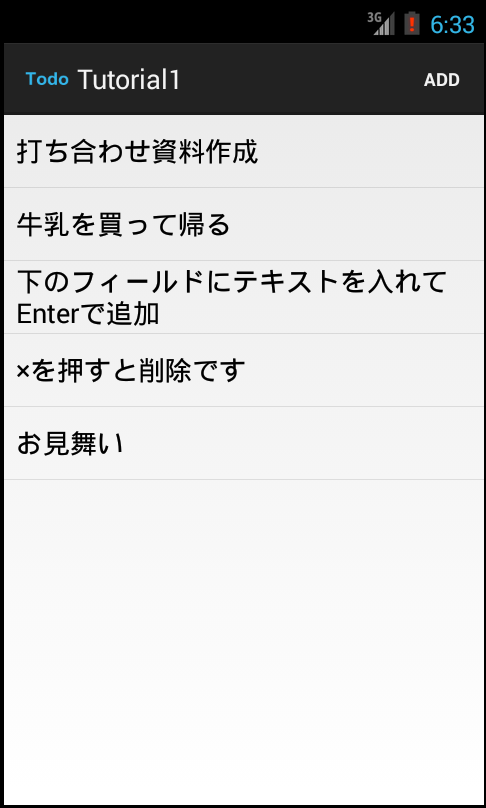
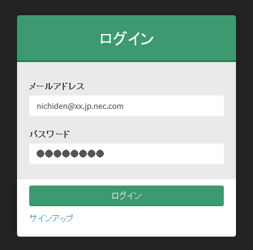
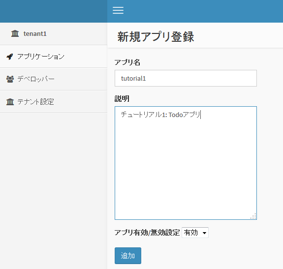
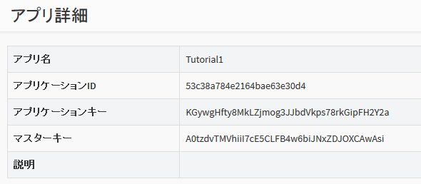

2. チュートリアル1 : TODOアプリ (オブジェクトストレージ)¶
最初のチュートリアルでは、Android SDK を使用して簡単な Todo アプリ(Androidネイティブアプリ)を作成します。
{kind=link}
- Todo 項目を入力して追加したり、削除することができます。
- データは BaaS サーバ上に保存されます。データは JSON で表現し、「オブジェクトストレージ」に格納されます。
- 本アプリは Android 端末上で動作するネイティブアプリで、Java で作成します。
なお、本チュートリアルでは、簡単のためユーザ認証やアクセス制御は一切 行いません。ユーザ認証を行うチュートリアルは、チュートリアル2以降を参照してください。
2.1. 新規アプリケーションを作成¶
まず、 BaaS サーバのデベロッパコンソールにログインし、新規アプリケーションを作成します。
ブラウザを開き、デベロッパコンソールにアクセスし、 ID とパスワードを入力してログインしてください。
ログインが完了すると、テナント名の一覧が表示されます。ここに表示されている テナントID は後ほど使用しますので、メモしておいてください。
使用するテナントをクリックします。

「アプリケーション」をクリックし、「追加」ボタンを押して新規アプリケーションを作成します。
ここではアプリ名と説明文を上記のように入力します。
アプリの作成が完了すると、アプリの詳細情報が表示されます。 ここで表示される「アプリケーションID」「アプリケーションキー」は アプリケーションの認証に使用する秘密情報です。 この２つは後ほど使用しますので、メモしておいてください。
2.2. バケットの作成¶
Todo 情報を格納するための「バケット」を作成します。
画面左の「オブジェクトバケット」⇒「追加」をクリックして、バケットを追加します。

バケット名は "TodoTutorial1" としてください。
また、バケットのアクセス権限を変更し、誰でも(anonymousユーザ)バケットを読み書きできるようにします。 (デフォルトでは、認証ユーザしかバケットを読み書きできないようになっています）
「バケットACL」の r の行が "g:authenticated" となっていますので、 これを "g:anonymous" に変更してください。
また、「コンテンツACL」の r と w の行が "g:authenticated" となっていますので、 こちらも "g:anonymous" に変更してください。
2.3. サンプルコードの変更¶
チュートリアル1のサンプルコードを設定し、実際に動作させてみます。
チュートリアルの tutorial1/src/main/java/com/nec/android/baas/tutorial1 ディレクトリにある Consts.java ファイルを 以下のように変更します。
public abstract class Consts {
/**
* テナントID
*/
public static final String TENANT_ID = "53c379dc4b54a455b6777730";
/**
* アプリケーションID
*/
public static final String APP_ID = "53c379fa4b54a455b6777734";
/**
* アプリケーションキー
*/
public static final String APP_KEY = "ZmoFlxp3Klr11GZbyV11UsroMsAgMWyxncEHKuLJ";
/**
* エンドポイントURI
*/
public static final String ENDPOINT_URI = "https://api.example.com/api/";
/**
* データベース暗号化用パスワード
*/
public static final String ENCRYPT_KEY = "1234567890";
}
- TENANT_ID には テナントIDを設定してください。
- APP_ID にアプリケーションIDを設定してください。
- APP_KEY にアプリケーションキーを設定してください。
- ENDPOINT_URI には、 BaaS API サーバの URL を指定してください。パスの /api/ まで必要なので注意してください。
- ENCRYPT_KEY は本チュートリアルでは使用しませんので、ダミーの文字列を設定してください (空文字列ではエラーになりますのでご注意ください）
2.4. サンプルの実行¶
Android Studio から tutorial1 ディレクトリをプロジェクトとしてインポートし、 ビルド・実行してください。
ADD ボタンを押すと、Todo を追加するダイアログが表示されます。
Todo を長押しすると、削除となります。
また、メニューから Refresh を選択すると、サーバからデータをリロードします。
注意
Android エミュレータを使用する場合、プロキシを使用しないようにしてください。 具体的には、環境変数 http_proxy を設定しないようにしてください。 エミュレータでプロキシを使用するようになっていると、HTTPS 接続が失敗することがあります。